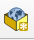
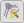

Справка 5 Векторизация топографической карты
5.2 Цель работы
Научиться создавать базу пространственных данных для картографирования, научиться проводить векторизацию объектов на топографической карте и снимке.
5.3 Создание базы пространственных данных
Составление карты подразумевает, прежде всего, создание векторных наборов данных.
Векторные данные – данные, которые описываются набором координат.
На данный момент нам необходимо знать, что векторные объекты могут относиться к трём основным типам геометрии: 1) точечные; 2) линейные; 3) полигональные.
Классы объектов – это наборы однородных векторных данных одного типа геометрии с одним набором атрибутов, относящие к одному роду пространственных объектов или явлений. Например, на почвенной карте будет визуализироваться класс полигональных объектов почв, класс полигональных объектов механического состава, класс внемасштабных почвенных ареалов.
Атрибут класса объектов – это формализованное описание какого-либо свойства класса объектов. Атрибутов может быть много, каждый из них отвечает за различные аспекты пространственных объектов или явлений. У класса почв это может быть атрибут типа, подтипа, pH, содержания гумуса, мощности и т.д. Атрибуты строго типизируются, то есть при создании указывается тип данных, который будет храниться в атрибутивном поле: целочисленные данные, действительные числа, числа с плавающей точкой, логические значения, текстовые данные и ряд других.
QGIS поддерживает различные форматы пространственных данных. Среди них наиболее удобным и современным для хранения и работы считается формат Geopackage. По сути это формат базы пространственных данных, внутри которой мы можем складывать различные классы объектов. Для создания базы данных формата Geopackage откройте окно Браузера внутри QGIS. Если его нет, включите его в выпадающем списке при щелчке правой кнопкой мыши по пустой панели. Найдите каталог, в котором вы хотите создать базу данных (лучше всего, чтобы путь к этой базы состоял из символов латинского алфавита, не содержал дефисов, пробелов и спецсимволов). Правой кнопкой мыши щелкните по каталогу, выберете Новые – Geopackage. Откроется окно, которое помимо самой базы данных предложит создать класс объектов внутри неё. В поле Имя таблицы введите имя класса объектов латинскими символами, лучше, чтобы это был английский перевод соответствующего вида картографируемого объекта, а не транслитерация.
Другой вариант создания базы данных – нажмите на кнопку  на панели менеджера источников данных.
В поле Тип геометрии укажите соответствующую геометрию объектов.
Обратите внимание, для площадных объектов необходимо выбирать полигональную геометрию, для линейных (реки, горизонтали и др.) – линейную, для внемасштабных (точечных) знаков – точечную.
Укажите спроецированную систему координат. Если указать геодезическую систему координат, то велика вероятность, что при векторизации объектов возникнут курьёзные ситуации. В разделе New Field можно указать имя, типа и длину атрибутивного поля создаваемого класса объектов.
Каждый последующий класс объектов создавайте внутри базы данных. Таким образом вы сформируете единое хранилище для всех картографируемых объектов.
5.4 Векторизация
Созданные классы объектов в базе данных можно добавить в перечень слоев проекта простым перетаскиванием, либо дважды щёлкнув по ним в Браузере. Для редактирования объектов и добавления новых объектов в класс необходимо войти в режим редактирования. Для этого можно щелкнуть правой кнопкой мыши по слою и выбрать пункт Режим редактирования, либо выделить слой и найти на панели инструментов кнопку  . Активация режима редактирования откроет некоторые другие кнопки на панелях. Например, для полигонального объекта появится кнопка
. Активация режима редактирования откроет некоторые другие кнопки на панелях. Например, для полигонального объекта появится кнопка  , с помощью которой можно создать новый полигон в слое. Для других типов геометрии иконка будет немного отличаться.
, с помощью которой можно создать новый полигон в слое. Для других типов геометрии иконка будет немного отличаться.
Рисовка контура осуществляется с помощью левой кнопки мыши. Для завершения рисовки объекта нажмите правую кнопку мыши. Для редактирования отдельных вершин нажмите на кнопку . После этого у объекта кружочками выделятся вершины.

Курсор в таком режиме может вести себя тремя разными способами:
При выделении вершины вы можете изменить её положение
При выделении ребра вы можете сдвинуть его вместе со смежными вершинами
При нажатии на плюсик в центре ребра добавляется новая вершина
Нажатие на клавишу DELETE позволяет удалить вершину.
При векторизации объектов часто возникает необходимость пристыковать вершины одного объекта к вершинам другого объекта. Для корректной и комфортной пристыковки нужно включить панель Инструменты прилипания (snapping). Кнопка в виде магнита  активирует прилипание. Остальные кнопки на данной панели позволяют уточнить параметры прилипания, в том числе расстояние, на котором оно начинает действовать.
активирует прилипание. Остальные кнопки на данной панели позволяют уточнить параметры прилипания, в том числе расстояние, на котором оно начинает действовать.
Если вам необходимо повторить значительную часть существующего контура при создании нового, то удобнее всего воспользоваться трассировкой (Tracing), нажав на кнопку  на панели инструментов прилипания. После этого при ведении на небольшом расстоянии от контура новый контур будет автоматически пристыковываться к существующем.
на панели инструментов прилипания. После этого при ведении на небольшом расстоянии от контура новый контур будет автоматически пристыковываться к существующем.
Дополнительные инструменты оцифровки
Соответствующую панель вы так же, как и предыдущую, можете найти в выпадающем списке панелей.

На данной панели доступны инструменты для векторизации параллельных и перпендикулярных линий, для перемещения объектов, создания внутренних колец (по сути – дырки в полигоне), разрезания объектов, склеивания объектов и другие.
Выбрать объекты, например, для склеивания можно с помощью инструмента выделения  .
.
Не забывайте регулярно сохранять изменения в геометрии слоев с помощью кнопки на панели  . Также не забывайте изменять изменения в самом проекте (они касаются набора слоев, их оформления, некоторых параметров) с помощью кнопки
. Также не забывайте изменять изменения в самом проекте (они касаются набора слоев, их оформления, некоторых параметров) с помощью кнопки  .
.
5.5 Работа с атрибутами
Векторизация предназначена для показа геометрической составляющей объектов и явлений на карте. Для показа семантических (смысловых) различий в явлениях используются атрибуты. Преимущество ГИС-пакетов по сравнению с графическими пакетами заключается в том, что мы можем напрямую сопоставить символику слоя и значения атрибутивных полей. Например, если мы показываем качественным фоном какое-либо явление, то каждой явление должно иметь своё значение в атрибутивной таблице. Открыть атрибутивную таблицу слоя можно, нажав правой кнопкой мыши по нему и выбрав пункт Открыть таблицу атрибутов.
Для редактирования атрибутов необходимо зайти в режим редактирования с помощью кнопки . Для добавления или удаления атрибутивных столбцов также необходимо зайтив в режим редактирования, после чего появятся соответствующие кнопки  и
и  .
.
Обратите внимание, что изменение структуры атрибутивной таблицы в режиме редактирования – это исключительно «фишка» QGIS. Другие известные ГИС-пакеты, например ArcGIS, позволяют это делать только вне режима редактирования.
Каждая строка в атрибутивной таблице – это, по сути, один объект в классе объектов. Выделять объекты в атрибутивной таблицы можно с помощью нажатия левой кнопки мыши по левому краю строки. Для выбора нескольких строк подряд можно «тянуть» выделение левой кнопкой мыши, либо выделить первый и последний объект с зажатым SHIFT. Для выбора нескольких отдельных строк зажмите CTRL. Выделяемые в атрибутивной таблице объекты будут подсвечиваться жёлтым цветом на карте. Для приближения к выбранному объекту нажмите на кнопку Увеличить карту до выделенных строк
| Карпачевский А.М. Топография с основами картографии. М.: Географический факультет МГУ, 2025. |